The optical laboratory / 26
Magic Eye Studio.
A picture hidden in a pattern. Choose a shape, then look beyond the
surface.
The depth collection 16 studies
Drag a sample onto the main image to generate it. Or click a sample.
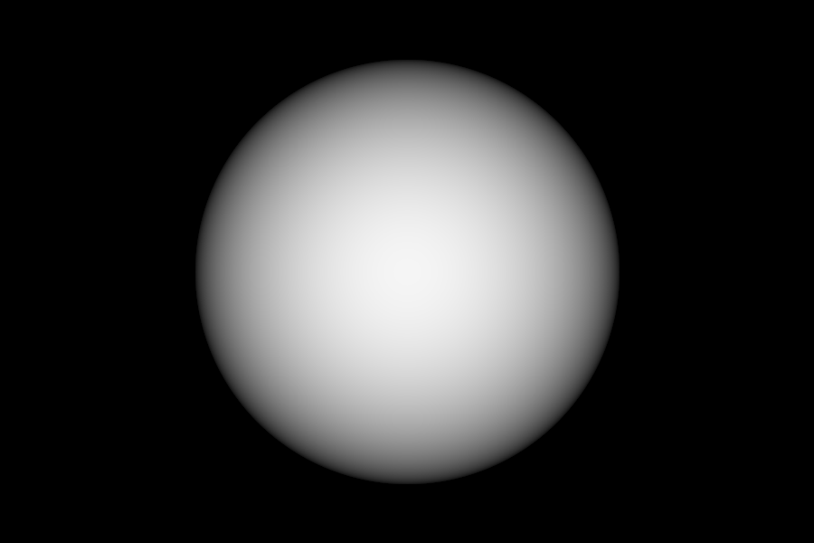
Sphere
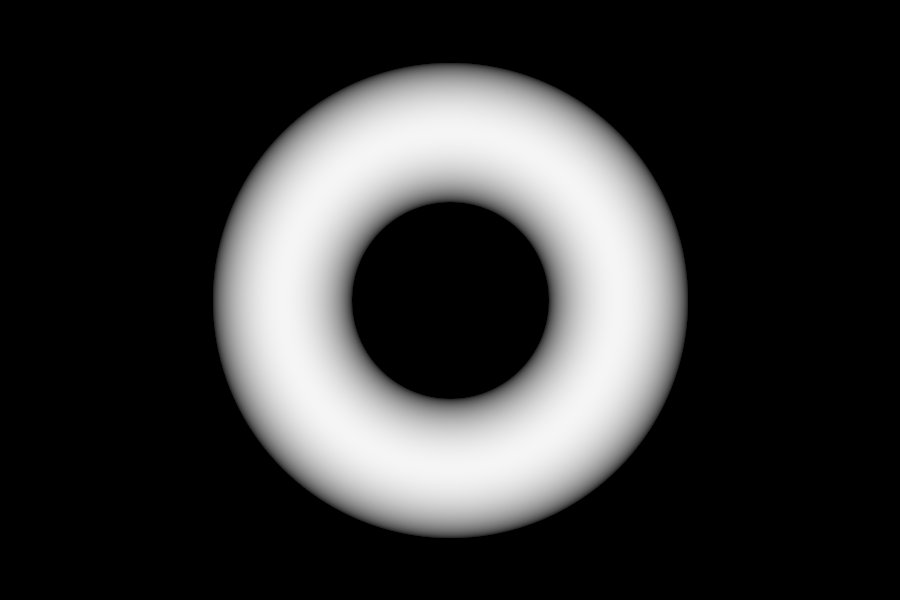
Torus
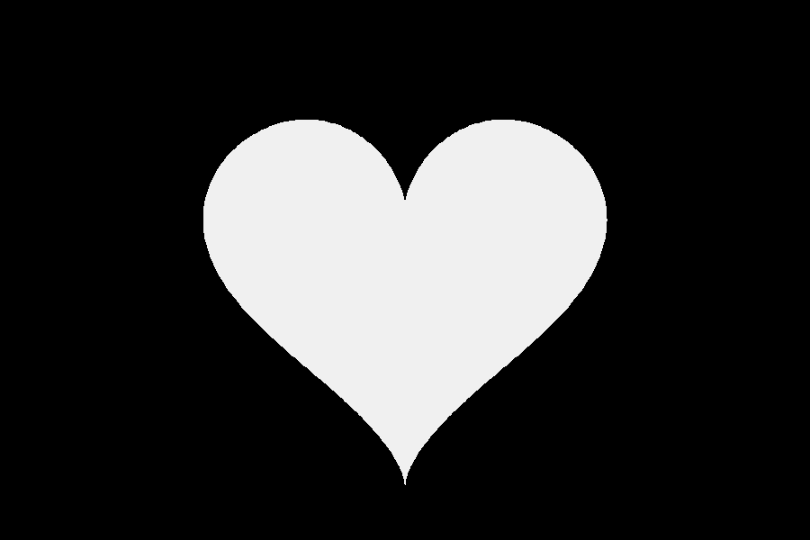
Heart
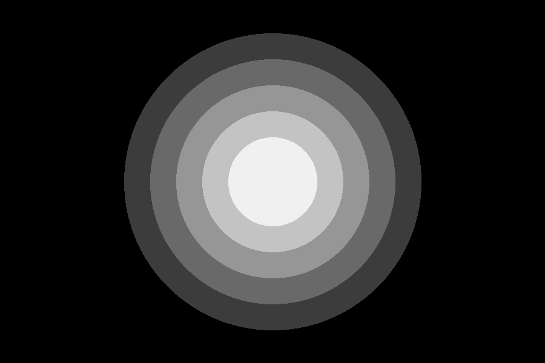
Rings
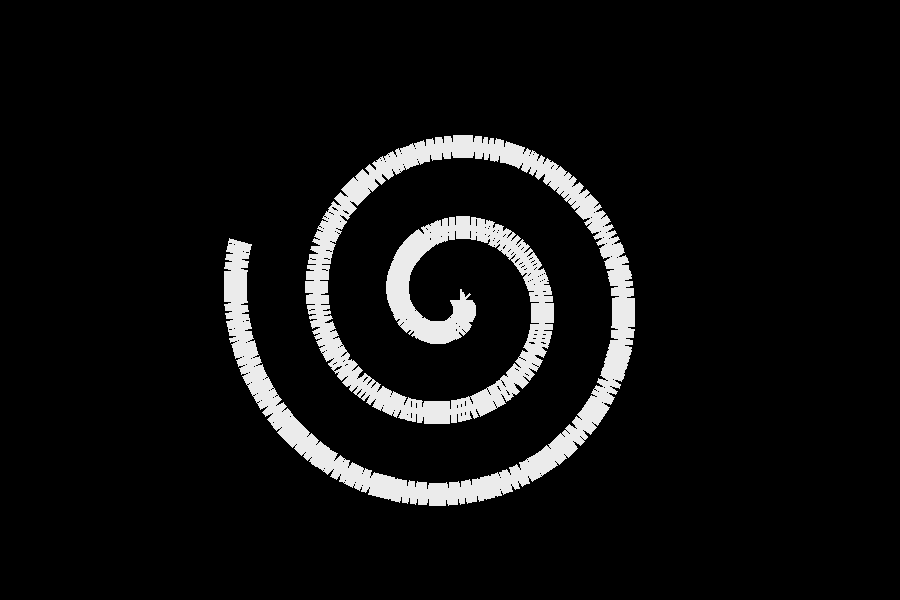
Spiral
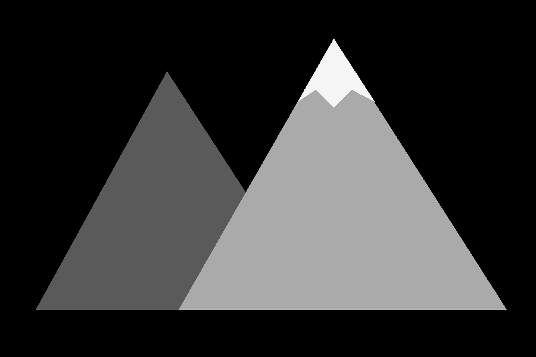
Mountain
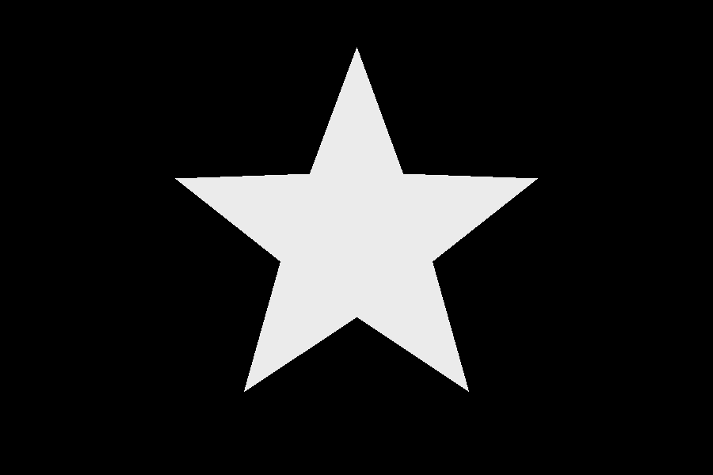
Star
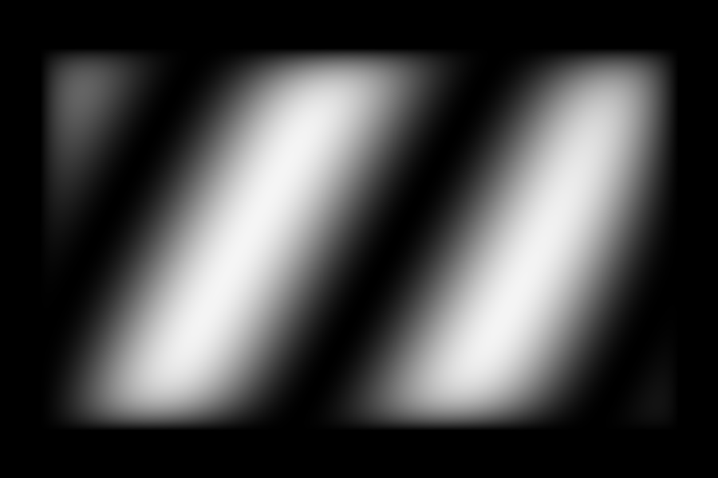
Wave
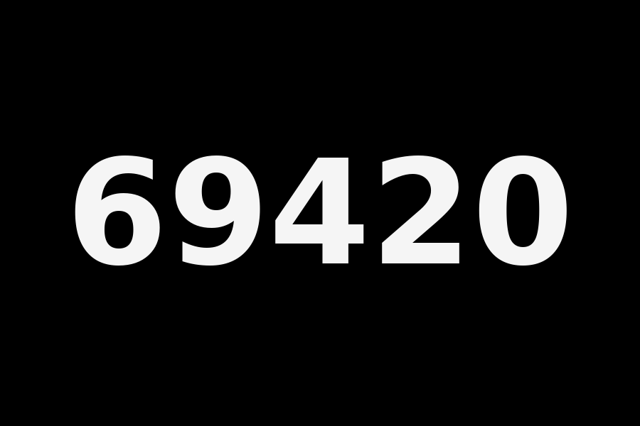
69420
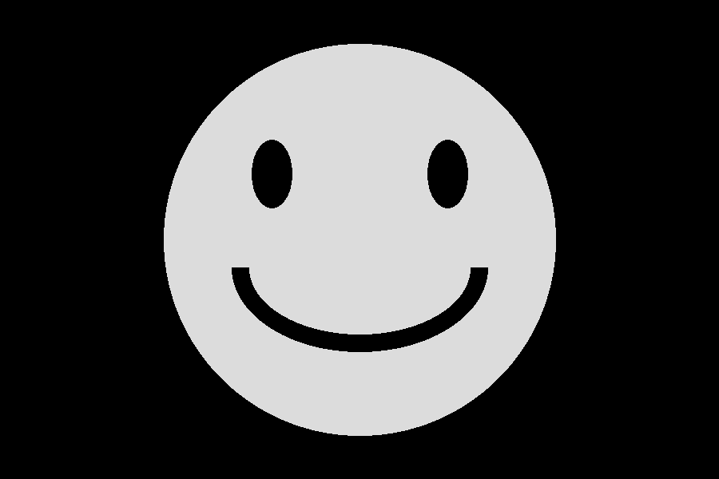
Smiley
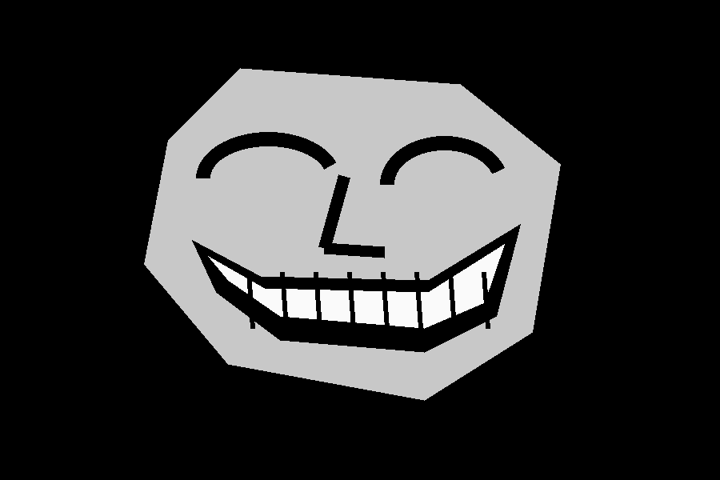
Troll grin
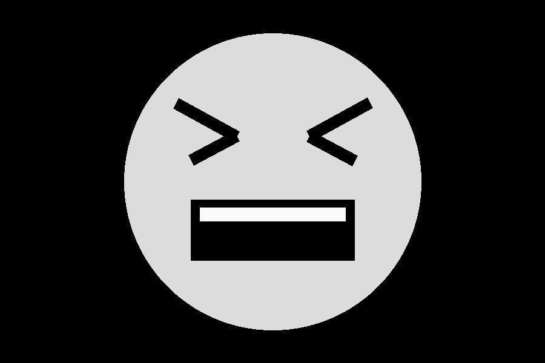
Rage face
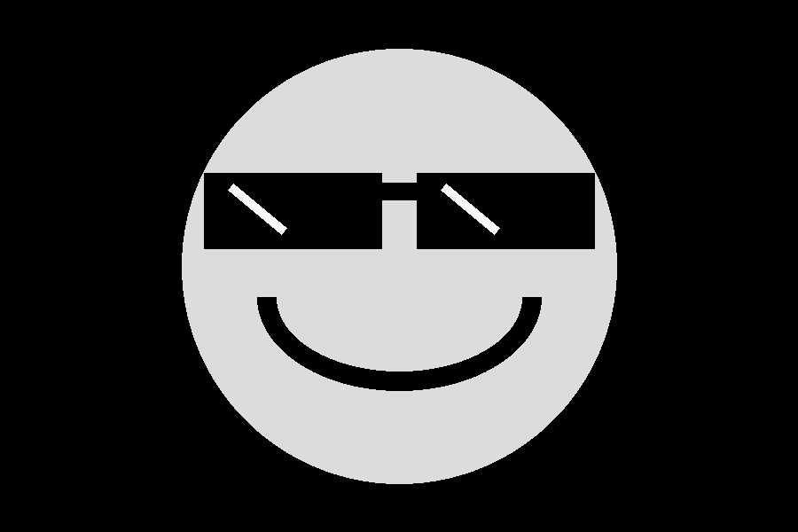
Deal with it
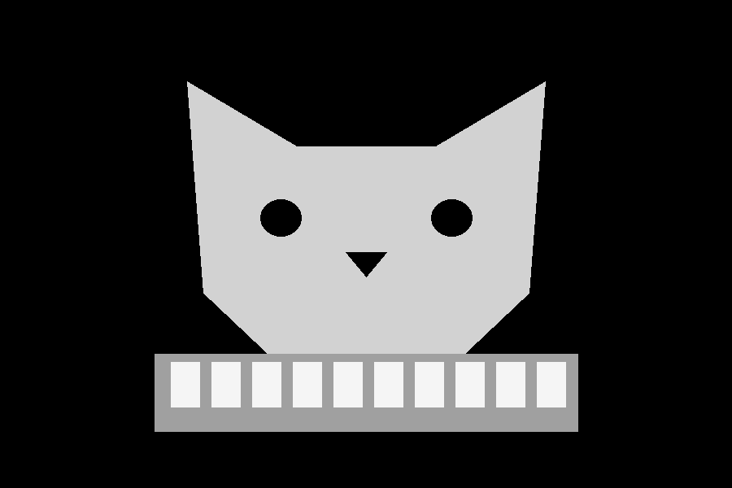
Keyboard cat
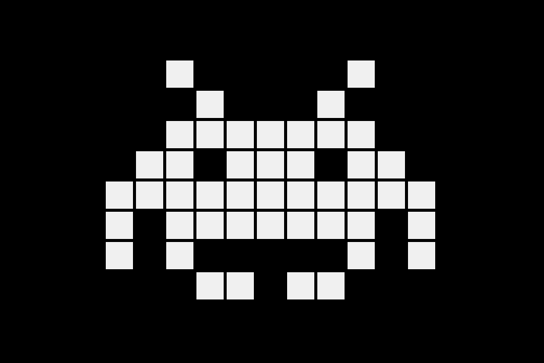
Space invader
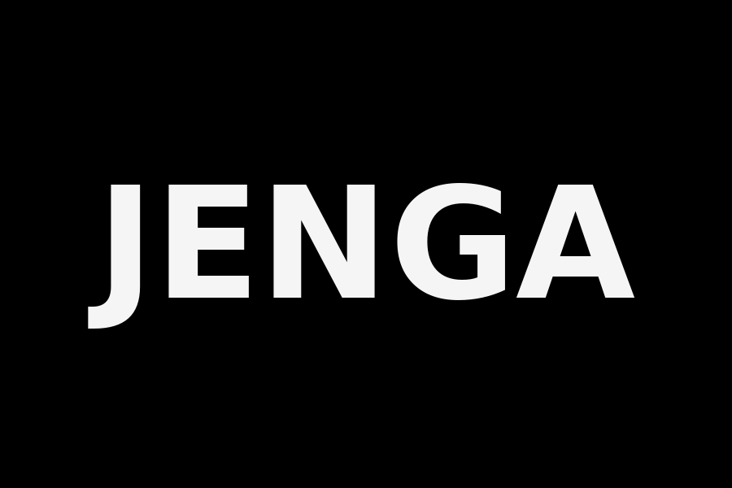
JENGA
A little perspective changes everything.
Black sits at the back. White comes forward. Grey shades create the
space between.
LOOK BEYOND THE SURFACE
Find another dimension.
1200 × 800
↓ Drag a sample here — the Magic Eye image updates immediately.
Parallel viewing · look through the image
Preparing a sample stereogram…
Generate Magic Eye
Cancel
New pattern
Reset settings
01 / Source image Floating sphere · sample
02 / Depth map Black = far · white = near
◎
Let the pattern become three-dimensional. Relax
your gaze as though looking through a window. The two guide dots
should merge into three, with the middle pair overlapping. Keep
the image level.
Create your stereogram
Images stay in your browser. No account or engine server required.
↑ Choose an image or drop it here · PNG, JPEG, WebP
Try the sample first, then add your own image.
Sample depth image
Sphere
Torus
Heart
Rings
Spiral
Mountain
Star
Wave
69420
Smiley
Troll grin
Rage face
Deal with it
Keyboard cat
Space invader
JENGA
Use this sample
Depth & shape
Pattern & output
↓ Download stereogram PNG
↓ Download depth map
Download is enabled when generation finishes.